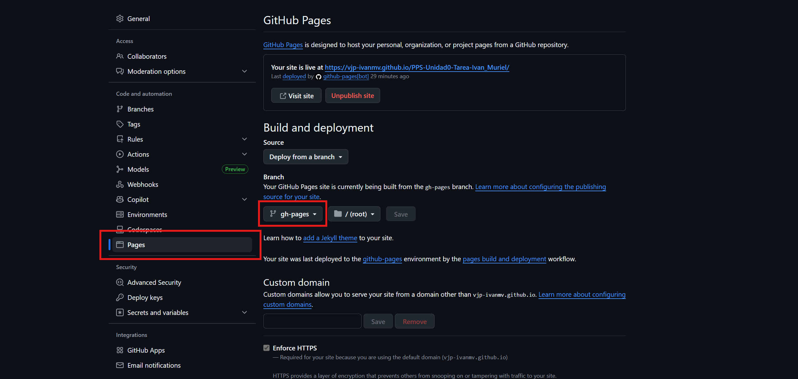

Actividad Unidad 0 - gitPages
Esta documentación creada sobre el proyecto se creará en la rama gh-pages de nuestro repositorio y vamos a aprovechar para publicar esta docuemtación con Git Pages.
Git Pages GitHub Pages es un servicio de alojamiento web que permite a los usuarios de GitHub publicar sitios web estáticos (HTML, CSS, JavaScript) directamente desde un repositorio de Git, sin costo alguno. Es ideal para portafolios, blogs o páginas de proyectos, y no requiere experiencia previa en programación o servidores.
Uniendo esto con la sección gitActions, tenemos que cada vez que realizemos un git push en nuestro repositorio el workflow se va a disparar, haciendo que en nuestro equipo se construya la documentación HTML del proyecto en su rama gh-pages y a la vez es subida, junto a los cambios realizados en la rama main, al repositorio de github.
Esta documentación la podremos visualizar a traves de GitHub Pages
- Activación de GitHub Pages:
Una vez que la pipeline se complete por primera vez, ve a Settings -> Pages en tu repositorio de GitHub y configura la fuente de despliegue a la rama gh-pages que la pipeline acaba de crear. Pulsamos el botón de save para que se guarden los cambios.

Salimos para que se guarden los datos y tras unos minutos, en la sección de Pages tenemos:

-
Verificación Final:
La documentación debería estar accesible en la URL de GitHub Pages ( ej.
https://Tu_usuario_github.github.io/<repositorio>/). Podemos encontrarlo en Deployments /Github pages hacemos clic sobre ella y se mostrará el enlace para acceder a nuestra página web estática.